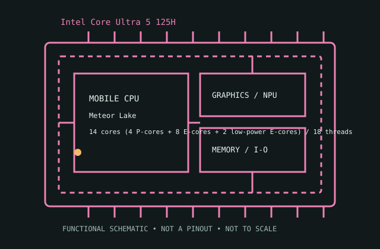

[ INTEL MOBILE GENERATIONS // IDENTIFIED CPU ]
Intel Core Ultra 5 125H
Meteor Lake (Core Ultra Series 1 H-series), 2023. 14 cores (4 P-cores + 8 E-cores + 2 low-power E-cores) / 18 threads; maximum turbo up to 4.50 GHz P-core turbo; 18 MB Intel Smart Cache; 28 W Processor Base Power; 115 W Maximum Turbo Power; FCBGA2049, soldered tiled package; DDR5-5600 or LPDDR5x-7467; memory type and maximum capacity depend on board. Meteor Lake introduced Intel Core Ultra naming, a tiled mobile design and an integrated NPU; this 125H model combines P-, E- and low-power E-cores.

MODEL IDENTIFICATION: Intel Core Ultra 5 125H. Confirm the complete model suffix and OEM board documentation; this is a soldered mobile package, not a universal replacement part.
Recorded specifications
| Cataloged model | Intel Core Ultra 5 125H |
|---|---|
| Generation / platform | Meteor Lake (Core Ultra Series 1 H-series), 2023. Meteor Lake introduced Intel Core Ultra naming, a tiled mobile design and an integrated NPU; this 125H model combines P-, E- and low-power E-cores. |
| Core / thread configuration | 14 cores (4 P-cores + 8 E-cores + 2 low-power E-cores) / 18 threads |
| Maximum turbo frequency | up to 4.50 GHz P-core turbo; workload and OEM power/thermal policy determine sustained clocks. |
| Cache | 18 MB Intel Smart Cache |
| Processor power | 28 W Processor Base Power; 115 W Maximum Turbo Power; this published power class is not a laptop-wide power guarantee. |
| Package | FCBGA2049, soldered tiled package |
| Memory interface | DDR5-5600 or LPDDR5x-7467; memory type and maximum capacity depend on board |
| Expansion / platform interface | PCI Express 5.0/4.0; CPU/SoC lane exposure is OEM-platform dependent |
| Integrated graphics | Integrated Intel Arc GPU (7 Xe-cores on qualifying dual-channel memory configurations) |
| Platform compatibility | Meteor Lake-H system only; the multi-tile BGA package, embedded controller/firmware, cooling and memory topology are platform-specific. Not field-upgradable. |
Compatibility and service notes
- Meteor Lake-H system only; the multi-tile BGA package, embedded controller/firmware, cooling and memory topology are platform-specific. Not field-upgradable.
- DDR5-5600 or LPDDR5x-7467; memory type and maximum capacity depend on board Memory speed, channel wiring and any memory-on-package configuration must match the system-board design.
- Check the laptop manufacturer's exact model-level CPU list, board revision, BIOS/firmware, thermal assembly and power profile. Package name alone does not guarantee electrical, firmware or mechanical compatibility.
- PCI Express capabilities do not promise a particular connector, storage slot or external port; those are implemented by the notebook platform.
Service and archival notes
Meteor Lake introduced Intel Core Ultra naming, a tiled mobile design and an integrated NPU; this 125H model combines P-, E- and low-power E-cores. Record the complete processor marking, system SKU, board revision, BIOS, installed memory topology and cooling/power configuration with any service or test observation.
This original SVG is a functional archive schematic only. It is not a die photograph, package image, pinout or installation guide.
Sources & further reading
- Intel ARK exact-model search — Intel Core Ultra 5 125HIntel's searchable processor specification catalog. Confirm the exact suffix and consult the model listing for its published feature limits.
- Intel ARK / Intel processor family referenceIntel official family listing for the generation where available; the Core Ultra page identifies Intel's mobile Core Ultra product family. It is not a substitute for the exact model page.
- Intel product-family overview — Core Ultra processorsManufacturer overview for the product family; laptop implementation and serviceability remain OEM-specific.
At least two official Intel HTTPS references are provided above; verify the exact model against the laptop maker's support documentation before service.